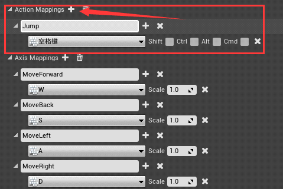

UE4实现人物跳跃
这一节我们来实现人物的跳跃。
1) 首先我们打开 UE4 编辑器，点击项目设置，点击输入，添加 BindAction 类型的按键绑定，名字为 Jump，按键是空格键。
2) 打开 VS 编辑器，在我们的角色类 APlayingCharacter 头文件的末尾声明两个函数，分别是开始跳跃和停止跳跃：
3) APlayingCharacter.cpp 实现如下：
4) 在 SetupPlayerInputComponent 函数里面绑定按键输入：
5) 编译，打开 UE4 编辑器点击播放，按空格键人物可以跳跃。
1) 首先我们打开 UE4 编辑器，点击项目设置，点击输入，添加 BindAction 类型的按键绑定，名字为 Jump，按键是空格键。

2) 打开 VS 编辑器，在我们的角色类 APlayingCharacter 头文件的末尾声明两个函数，分别是开始跳跃和停止跳跃：
//跳跃开始 void JumpStart(); //跳跃结束 void JumpEnd();
3) APlayingCharacter.cpp 实现如下：
void APlayingCharacter::JumpStart()
{
//如果是真的话，角色跳跃
bPressedJump = true;
}
void APlayingCharacter::JumpEnd()
{
//如果是假的话，结束跳跃
bPressedJump = false;
}
4) 在 SetupPlayerInputComponent 函数里面绑定按键输入：
void APlayingCharacter::SetupPlayerInputComponent(UInputComponent* PlayerInputComponent)
{
Super::SetupPlayerInputComponent(PlayerInputComponent);
InputComponent->BindAxis("MoveForward",this, &APlayingCharacter::MoveForward);
InputComponent->BindAxis("MoveBack",this, &APlayingCharacter::MoveBack);
InputComponent->BindAxis("MoveRight",this, &APlayingCharacter::MoveRight);
InputComponent->BindAxis("MoveLeft",this, &APlayingCharacter::MoveLeft);
InputComponent->BindAxis("Turn", his, &APawn::AddControllerYawInput);
InputComponent->BindAxis("LookUp",this, &APawn::AddControllerPitchInput);
InputComponent->BindAction("Jump",IE_Pressed,this,&APlayingCharacter::JumpStart);
InputComponent->BindAction("Jump", IE_Released, this, &APlayingCharacter::JumpEnd);
}
BindAction 是一种 “状态”按键输入类，IE_Pressed 表示的是按下的时候执行JumpStart() 函数，IE_Released 表示的是松开的时候执行JumpEnd()事件。BindAxis 按键绑定类型是可以一直按一直执行的，而 BindAction 是按一次执行一次事件。松开执行一次事件，BindAction也可以不配套使用。5) 编译，打开 UE4 编辑器点击播放，按空格键人物可以跳跃。
关注公众号「站长严长生」，在手机上阅读所有教程，随时随地都能学习。内含一款搜索神器，免费下载全网书籍和视频。

微信扫码关注公众号